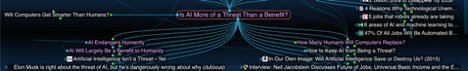
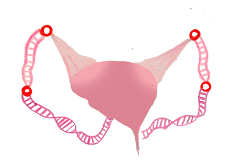
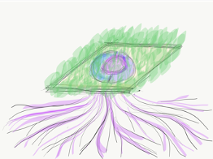
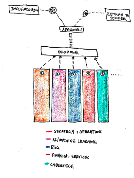
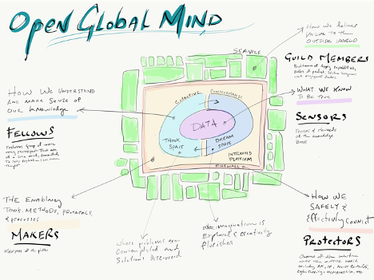
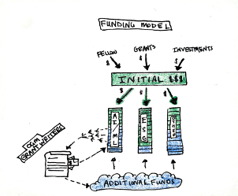
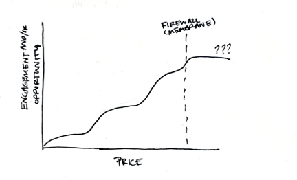

Hey all,
There have been a lot of questions about what we’re doing, what OGM is, etc. A while back, I took some time to draft a vision statement for what OGM could be. I am sharing it here to get some initial reactions from the group. I am in the process of putting this somewhere open and editable so that interested parties can collaborate on it.
While many of these thoughts are inspired by both private and group conversations, the content that follows is my own and is not intended to speak on behalf of any person, entity, or group other than myself.
Looking forward to your comments and questions!
Project Intro
Open Global Mind is a project to build communities and platforms that will help us make sense of the world – together. Our ultimate goal is to elevate global consciousness by creating a place for open-minded dialogue about the narratives that shape our lives. Ideally we will create some cool and useful tools along the way.
This isn’t an altogether new idea. One of the benefits of the web and the rise of social media is that we have created mechanisms that give voice to anyone with an internet connection. Similarly, any individual with an internet connection is a potential listener. Many individuals, think tanks, non-profits, and companies whose goal is to contribute to these global conversations have made use of this new delivery method to disseminate information. However, they are not alone.
Unfortunately, the platforms that are widely used to disseminate information make it all too easy for nefarious actors spread fake news and information across the world, holding our minds hostage. Good intentions are drowned out by the cacophony of voices that make up the data-and-opinion rich digital ecosystem that we have created.
Thus, we are presented with an interesting dilemma. How do we design a mechanism by which we can preserve the qualities and lineage of ideas that have actual truth and merit while also allowing for the recombination of these ideas in ways that create new and novel ones that elevate our collective consciousness? How do we enrich the quality of the thoughts that govern our hive mind without silencing those who challenge them? How do we create a place where ideas go not to die, but to live even if it is through the vitality of other ideas?
At Open Global Mind, our commitment to open-mindedness offers a third way out: a place where thoughts and ideas can crash into each other. We seek to achieve this in three ways.
Visualization

First, we will curate tools to visualize not only ideas, but also the context from which they are drawn. By connecting points of view, we can engage more deeply with the knowledge already created while also pushing it forward. We can create a web of integrated knowledge that not only synthesizes what has come before it, but also expands the knowledge sphere.
StoryThreading

A key component to any idea is its narrative. What are the elements of an idea’s creation story? How do those ideas connect through time? How do new perspectives change the narrative?
Story-threading is a method by which ideas are “strung together” in a way that introduces new stories to the global consciousness – complete with context. Story-threaders proactively seek out these new narratives and employ a variety of creative techniques to bring these ideas to life.
Community Engagement

OGM realizes that technology is only a partial answer. And while story-threading is an effective way to uncover and create new ideas, this has little value without an audience. The rest, probably the harder part, is about norms, expectations, mindset and other social/psychological attributes. Thus, the platform’s goal is to seamlessly support collective human intelligence. We will build it as we go; hacking together existing tools and inventing and integrating new capabilities as we solve new problems. The platform will be fit for purpose, prioritizing effectiveness over commercialization, and we invite all to help us build it.
Building the Collective Consciousness
There are multiple ways to add new content to OGM
Fellow additions
a. Fellows (see role definition) are encouraged and expected to add new content to OGM. They work with master curators – sensors – who actively work to expand the ecosystem of data In the data layer.
Project-related additions
b. The input or output of specific projects can be added to OGM. See commercial use cases for context.
Individual additions
c. OGM may include individuals pitches sponsorship. Ideas that are judged to have some merit are sponsored by the institution, and the supporting thinking is added to OGM. See individual use cases for context.
Produced content
d. Content that is produced by story-threaders or OGM partners in support of an OGM project is added to OGM. See partnership use cases for context.
Organization & Governance

OGM is governed based on principles of integration rather than control. Each team/discipline/focus area is expected to govern itself and be a master of a given domain. Though direction is set as a group, leaders in each space are expected to accept the responsibility of owning the thought-leadership and direction of their specific domain. However, we must decide to adopt a specific direction or project as a group.
Our initial proposal is that we have a collection of initial focus areas. One of those focus areas is “Strategy & Operations”. Rules are that you can be a member/fellow of different guilds, but you cannot be the chief guild master of more than one.
A secondary proposal of the initial proposal is that we make Jerry the chief fellow in our Strategy & Operations guild.
Disciplines
A discipline is a domain of thought or subject area.
Number can be determined in the future and will depend on funding.
However, it would be cool to have rotating focus areas. The strategic arm of the brain can determine which areas might be good to invite or invest in. Consider it like a flex position on a fantasy football team.
Roles

Sensors
Sensors fulfill the primary research function of OGM. The primary responsibility of a sensor is to grow our knowledge base. Consider them similar to market research analysts responsible for key subject areas. They scan the environment and the world, searching for new thoughts, ideas, and insights to bring into the system.
Protectors
Owners of how OGM interfaces with the outside world. Their responsibilities includes oversite of API’s, IP, access controls, cyber security, membership, etc.
Fellows
Investors, leaders, and thought-provokers. To be a Fellow suggests a deeper level of partnership with OGM. These individuals (or organizations) grow and advance the fundamental mechanisms that support OGM. They help provide or procure funding for the pursuit of new projects and help guide thought leadership.
Makers (Builders)
The primary function of the “Makers”, or “Creators” is to create – or shepherd the creation of – tools and services.
Story-Threaders
The story-tellers of the group seek to make connections across multiple narratives, nodes, ideas, or strings of thought. They find creative ways to introduce these new stories to the global consciousness.
Participants
Users of OGM platform who may be makers, story threaders, protectors, or sensors in their own rights.
Sponsors
Members who support OGM in the form of grants, scholarships, sponsorships, time, etc.
Advisors
Members who offer guidance or advice to OGM. Perhaps more of a steering committee.
Guild Members
Membership in a guild distinguishes those that can be leveraged for guidance, advice, or inventive solutions in a given discipline or practice from other participants. An all-encompassing role, Guild Members are master practitioners of OGM capabilities. They are builders of the product, solution designers, and engagement seekers. Think of Guild Members as SME’s. For example, a developer with extensive experience developing API’s might be a guild member of an API-related guild. Similarly, a story-threader may be a member of a related guild. Furthermore, guild membership is not mutually exclusive. That is to say, a story-threader can belong to a “Builder” guild or a “Story-Threader” guild.
Engaging/Growing with the “Data Layer”
While the guiding principles of OGM remain the same regardless of the application, the data layer can be managed and accessed in different ways. To allow for flexibility in application, our approach is as follows:
The figure above is supposed to represent permeability of data later. Data from the consumer later is not allowed in the membrane. Data from the partnerships and proposals has the potential to make it through the membrane. Data from focus areas can be directly added to the core data later.
Core Data Layer
So, this is where all of our primary output and ideas live. The copy of it that is used for core OGM capabilities (should define this later) should be view-only. Meaning that people can sign on and sign in to look at it, but cannot actually edit the content.
Anyone with a membership to OGM can see this, but only those within the membrane can actually add to it or change it. Again, fellows are the gate-keepers here.
There is a potential to include content that lives behind a pay-wall
An Ecosystem application could allow a method of engagement with the community. See ecosystem use case.
OGM Commercial
As commercial partners seek to use OGM capabilities, they may wish to add proprietary data or findings into their version of OGM. Those versions would live outside of the OGM firewall. However, OGM will want rights to underlying ideas. See commercial use case for more info.
OGM Street
There are multiple ways to create personal versions of the OGM data later. Our code - which can be found on GitHub – can be used in the following ways
• Start data repository from scratch allows users all of the functionality of mind-mapping without any of the data. See Read-Dialogue-Apply Use Case. This would need to be developed.
• Download ours and add to it – we can give you a point in time download of our brain. You can add to it if you want. There is an opportunity here to potentially scan these copies for novel new ideas.
• Starter kits - We provide a boxed and curated experience about a subject area. We can have canned options for a certain price.
• We can also offer a curated experience for people who want something a little more for a certain price. They can work with a producer or story threader to make something that is catered to the specific person. See Read-Dialogue-Apply Use Case.
Project Funding

The primary way projects are funded is through the OGM Venture Fund. Fellows + Stakeholders meet annually to discuss project timelines and scope with steering committee. Funding is allocated based on need. If a project does not gain full funding, then it is up to the discipline leader to procure funding.
Further funding can be procured via grant or pitch. There is a possibility to link to the CN VC pitch project. OGM can provide support via grantwriting or production. Could also be a service.
Revenue
Membership
a. Model includes free access to some services. However, paid membership or content subscriptions could generate revenue. Compare to something like HBR. Levels of membership could be as follows:
i. Free use of basic visualization engines and other free services built on OGM platform
ii. Paid use of OGM service (such as story threading or knowledge management)
iii. Access to specialized produced content (included with membership fee)
iv. Thought-partnership that includes participation in roundtables, engagements, or even fellowship work (like a contract network)
v. Fellowship, which includes leading work and creating content

Engagements
b. As we develop ecosystems of thought around specific disciplines, we have the opportunity to produce engagements that feature projects and output from OGM focus areas.
Services
c. We can provide services on top of OGM, which can be anything from an API to curation practices.
i. Curating stories/data for companies or individuals
ii. Technical applications -
iii. Story-threading
Partnership “royalties”
d. Is there a way that OGM can get a cut of commercial applications of the platform without being a pirate?
Use Case Examples:
Team Restructure
Consider leader seeking to engage his team by including them in an effort to restructure their organization. He could interact with OGM in the following ways:
- Look for information already stored in the data later.
- Create mind-map independently as a way to track notes and make connections.
- Work with a sensor/curator to find relevant content or even produce a mind-map of relevant content/ideas. ($$$)
Commercial Use Case
Consider a situation where the complexity of a firm’s business and hyper-dynamic market environment is creating a greater need for enhanced strategic sensing and sense making capabilities. Information gaps, latency, fragmentation, and abstraction limits the ability of Sr. Leadership to gain the holistic real-time understanding needed to effectively respond to rapidly evolving challenges and opportunities. They seek to build a capability that allows them to collect and qualify diverse data sets, process and organize that data, and then synthesize it to determine the most effective next steps for their business.
By partnering with OGM makers and story-threaders, the firm can realize its goal by building the following:
• Strategic Newsroom built on immersive and holistic investigative reporting and research covering both quantitative and qualitative information from internal and external sources
• Interconnected Landscape Maps documenting the dynamic relationships between strategic insight, thoughts, imperatives, objectives, and initiatives
• Robustly Curated Knowledge Objects Library accessible through the landscape maps
• Holistic Sense Making Processes capable of producing and sharing nuanced understanding to enable effective decision making
• Information Dissemination Platforms able to in real-time, appropriately inform leadership and clearly communicate intentions and expectations needed to drive coordinated and aligned execution
Depending on the agreement with the firm, OGM can add data to its own data later. Similarly, output can be added as well. This could be priced into a work contract, with price varying based on benefit to OGM vs benefit to the firm.
Production Use Case
An OGM Partner wants to develop a compelling narrative around newly produced thought leadership. They engage with an OGM story-threader to create that narrative, along with some visual content.
Individual Pitches
An individual has created a program that can identify points of agreement by scanning debate transcripts. They pitch the idea to OGM Fellows, and the proposal is sponsored by the Artificial Intelligence/Machine Learning discipline.
Ecosystems
Imagine that the AI/Machine Learning discipline takes off. OGM finds that the AI community needs something – there is tension between academia and industry, but everyone would benefit from the ability to collaborate better. OGM seeks to intentionally foster better communication, better collaboration. We create a place where we can foster fruitful collaboration and conversation across disciplines. Access to the content and networking activities is based on level of membership. The discipline sponsors conferences, which leads to revenue.
To Be Addressed
What is the flow of work?
In general, ideas are adopted and funded. At that time, leaders/teams work amongst themselves to decide which ideas are worth pursuing, and which ideas are not. Tenants are to document the research and how you got to the final conclusion you’ve made. Teams work with threaders and to help tell that story.
Concept of a “Financial Fellow”
What is the return on capital? Is there a chance to re-define something here?
How do we address IP?
There are a variety of ways we can address and manage IP.
For guild level endeavors, I am not sure how we would address IP. Perhaps if the entire project is managed by and for OGM, the IP belongs to OGM. For example, consider a hypothetical situation where we develop a universal banking API. How do we balance the IP claims of the individual that creates it and that of OGM?
I think overall, OGM should claim that all “public” or simple “non-private” data can be housed on the platform. For example, perhaps we cannot include a specific module in the system like “History of the future” but we could have information in there saying that an effective way to scan for new opportunities is to imagine yourself at a future point and then look backwards.
For commercial applications, we can price differently based on whether the engage wants the IP. We can price our work accordingly and assign a premium for knowledge that we don’t get to keep. For example, if we design a firm’s strategic plan and don’t get to keep it, it costs $500k. If we do get to keep the framework, it’s $50k.
Thought Partners
There are members of OGM that produce. But that production is at different levels.
Essentially we need to think about the question – what do the levels of membership look like?
If you are within the firewall, you are fully supported.
If you are outside of the firewall, you get the benefits of some things (conferences etc.) but you operate independently as far as Finance goes. Your access to the actual data layer is different.
Maybe we look twice at your output?
Node hierarchy: web underneath is whatever, but the big nuggets are clear.
Perhaps a ranking system where you are ranked based on how many “nuggets” you add to the brain. There has to be a nice and easy way to figure this out.


{kind=link}